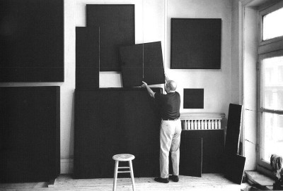

A friend pointed me to a story on Medium called
Thank you for the compliment, Mr. Wichary. I can’t quibble with the details of your piece. It’s true that Medium and I are opposed to certain typographic shortcuts imported from the typewriter.
But by the end, I realized I disagree deeply with Medium about the ethics of design. And by ethics, I mean something simple: though Medium and I are both making tools for writers, what I want for writers and what Medium wants couldn’t be more different. Medium may be avoiding what made the typewriter bad, but it’s also avoiding what made it good. Writers who are tempted to use Medium—or similar publishing tools—should be conscious of these tradeoffs.
So, a few words about that.
For those who don’t incessantly follow Internet startups, Medium is a blogging service run by one of the founders of Twitter, multibillionaire Evan Williams. Though it owes much to blogging services of the past (including Blogger, also founded by Mr. Williams), Medium is oriented toward longer, less diaristic stories.
Medium also differs from earlier blogging services in a significant, contrarian way: it offers you, the writer, nearly zero options for the presentation of your stories. No matter what kind of story you write, or who your readers are, it gets packaged into a single, non-negotiable template.
Medium isn’t the only blogging service riding this wave, though so far it seems to have the biggest surfboard. Others include Svbtle, Postagon, and Silvrback. They all promote a similarly constrained approach to design, which is sometimes called minimalist.
As a fan of minimalism, however, I think that term is misapplied here. Minimalism doesn’t foreclose either expressive breadth or conceptual depth. On the contrary, the minimalist program—as it initially emerged in fine art of the 20th century—has been about diverting the viewer’s attention from overt signs of authorship to the deeper purity of the ingredients.

If that’s the case, we can’t say that Medium et al. are offering minimalist design. Only the veneer is minimalist. What they’re really offering is a shift from design as a choice to design as a constant. Instead of minimalist design, a better term might be homogeneous design.
On the one hand, Medium’s homogeneous design works and reads well. Members of Medium’s design team have catalogued the many typographic details they’ve implemented. Good for them. If they sometimes act as if they discovered typography like it was the Higgs boson, we can forgive their excess of enthusiasm. Bringing these details to a wider audience, and raising standards for typography on the web generally, is a worthy project.
On the other hand, a necessary side effect of Medium’s homogeneous design is that every story looks the same. If you agree that the role of typography is to enhance the text for the benefit of the reader (as I contend in who is typography for?), then it stands to reason that different texts demand distinct typography. As I say in What is Good Typography?, one size never fits all. Typography wants to be heterogeneous.
Still, I wouldn’t say that Medium’s homogeneous design is bad ex ante. Among web-publishing tools, I see Medium as the equivalent of a frozen pizza: not as wholesome as a meal you could make yourself, but for those without the time or motivation to cook, a potentially better option than just eating peanut butter straight from the jar.
The problem, however, is that Medium holds out its homogeneous design as more than a frozen pizza. It has become, by the Jedi mind trickery favored by today’s tech companies, a Bellagio buffet of delicious nonsense:
Evan Williams frames Medium
as a “ place for ideas” with an“ ethos” of“ openness and democracy—like the Internet itself.” Fine, but idealistic platitudes explain nothing. How, specifically, does Medium improve the Internet?Mr. Williams claims
that Medium is “ the best writing tool on the web.” Okay, that’s at least concrete. But we’ve got a lot of good web-based writing tools already. Medium does more than those?Actually, no—Mr. Williams concedes
that Medium has “ stripped out a lot of the power that other editors give you.” So how is it possible to be“ the best” while offering less?Here, Mr. Williams parries
—he claims that thinking about the presentation of your work is “ a terrible distraction and a waste of time.” Why?Apparently because he’s
“ one of those people who will open up Word and spend half [his] time defining styles and adjusting the spacing between paragraphs.” Hmm, not everyone has that problem with Word.Now comes the hand-waving, as Mr. Williams assures us that Medium’s homogeneous design isn’t a limitation—it’s in fact essential
to let your “ brilliance and creativity flow smoothly onto the screen.”Moreover, anyone who disagrees is a Luddite
—because “ everything [other than Medium] feels like stepping back in time.”
Like all nonsense, it’s intended to be easy to swallow. But Mr. Williams’s argument is flawed in at least three ways:
It makes no sense in the context of today’s web. If Medium had launched in 2005, it would’ve been astonishing. But it didn’t. Today, the costs of web publishing—including design—have declined to almost zero. Relative to today’s web, Medium is not creating new possibilities, but instead closing them off. To prevail, Medium needs to persuade you that you don’t care about the broader expressive possibilities of web publishing.
It sets up a false dichotomy about writing tools. Mr. Williams depicts the writer’s choice as Medium vs. complicated tools like Word. Not accurate. First, different tools exist for different needs. It would be silly to use Word to make a web page, but equally silly to use Medium to prepare a print-on-demand paperback. Second, anyone who’s used current blogging tools appreciates that web publishing has become heavily automated. Much of the formatting can be handled automatically (e.g., via WordPress themes) or manually, as you prefer.
You’re giving up far more than design choice. Mr. Williams describes
Medium’s key benefit as rescuing writers from the “ terrible distraction” of formatting chores. But consider the cost. Though he’s baiting the hook with design, he’s also asking you, the writer, to let him control how you offer your work to readers. Meaning, to get the full benefit of Medium’s design, you have to let your story live on Medium, send all your readers to Medium, have your work permanently entangled with other stories on Medium, and so on—a significant concession.
As for that entanglement among stories, Mr. Williams has conceded
But unlike the Times, Medium pays for only a small fraction of its stories. The rest are submitted—for free—by writers like you. After a long time being elusive about its business model, Medium revealed that it plans to make money by—surprise!—selling advertising. This means displaying ads, but also collecting and selling data about readers and writers. So Medium will extract revenue from every story, whether it paid for that story or not. (By the way, will that revenue be shared with writers? Um, no.)
And coming full circle—what’s the indispensable tool for creating this illusion of an editorial ecosystem? The homogeneous design. The butterfly ballot of 2000 (depicted in Why typography matters) proved that errors of typography can have historic consequences. Medium proves that typography can be used as a tool of economic leverage and control.
In sum—still superfluous.
Let’s remember two points that get lost among the torches and pitchforks carried by
First, although the typewriter did impose homogeneous (and ugly) typography, it had excellent ethics. The typewriter made it possible to write more quickly, legibly, and accurately than ever before, with low cost and high portability. In short, it offered freedom. For that, homogeneous design was a small price to pay.
Second, though typewriter typography was terrible, it wasn’t a choice made by typewriter manufacturers out of laziness or ignorance. These compromises were necessitated by the mechanical limitations of the typewriter. Typewriters were never ideal, but as certain limitations were overcome, they got better.
With today’s networked computers, we’re getting closer to the ideal. We enjoy the benefits of the typewriter without any of its limitations. We get more efficiency, speed, storage, design options, and freedom. The computer is the most remarkable device in the 500-year history of printing (which already includes a lot of remarkable devices).
This leads back to why those typewriter habits are so awful in the digital age. Computers have none of the mechanical limitations of typewriters. So the typographic shortcuts that were a necessary evil with typewriters are likewise obsolete. Why perpetuate them?
I rely on a broader version of this principle in my own work. Technology keeps improving, thereby expanding possibilities for us. So we have a choice. We can either ignore those possibilities, and merely accept what technology offers, which will ultimately make us lazy. Or we can explore those new possibilities. But to do that, we need to expect more of ourselves.
We also need better tools. I’d characterize most of my work as toolsmithing—whether the project is designing a font, writing a book, or creating publishing software. I don’t control how others use these tools. I don’t want to, either. For me, it’s far more interesting to share these tools and then be surprised by how others use them.
To that end, I deliberately avoid creating tools that do too much. Some assembly is always required. For instance, I’ll tell you the qualities of good website typography, but I’m not going to sell you a template. I want the customers for my tools to be responsible for some of the heavy lifting. That way, they discover that what they get out of the tool has a connection to what they put in.
So even though I oppose the typewriter habits, I still appreciate that core ethic of the typewriter—removing limitations when you can, doing your best with them when you can’t. That’s a great idea. Yes, let’s explore all the possibilities of the technology available to us. Let’s hack the hell out of everything and see what happens. In the typewriter era, the technological limitations were mostly hardware. Today, mostly software. But if we treat these limitations as something to obey—not overcome—we’ll just become indentured to whoever controls that technology.
In
In fact, its ethics are actually worse than the traditional typewriter. Why? Because Medium’s homogeneous design has nothing to do with limitations of the underlying technology (in this case, the web). As discussed above, it’s a deliberate choice that lets Medium extract value from the talent and labor of others.
Medium is a new kind of typewriter—the billionaire’s typewriter. It’s not the only billionaire’s typewriter. So is the Kindle. So is iBooks. So is Twitter. What distinguishes these new typewriters is not the possibilities they make available to writers, but what they take away.
Whereas the traditional typewriter offered freedom at the cost of design, the billionaire’s typewriter offers convenience at the cost of freedom.
As a writer and toolsmith, I’ve found the rush to embrace these systems perplexing. Not because I’m curmudgeonly. Not because I fail to understand that people, including writers, enjoy things that are free and convenient.
If you really believe that, then by all means, keep using the billionaire’s typewriter.
But if you have doubts, here’s a counterproposal.
As a writer, the biggest potential waste of your time is not typography chores, but Medium itself. Because in return for that snazzy design, Medium needs you to relinquish control of how your work gets to readers.
If you want to be part of something open and democratic, use open-source software. If you want to have your writing look great, learn something about typography (or hire a designer). If you need a platform for writing, try Pollen (the system I made for this site), or WordPress, or a subscription service like Atavist. I prefer web publishing despite its shortcomings, but if you don’t, then make an e-book or PDF and distribute it yourself.
17 Feb 2015
But never mind that. Medium, he explains,
Maybe it’s no surprise that Mr. Williams is reaching for the ethical high ground—Medium seems to be struggling. The past year has seen several reversals:
After launching Medium without a comment system—because that was the junk food of 1999—last year Mr. Williams relented and added comments, making Medium more like every other blog (or more like Twitter without a character limit).
After positioning Medium as a publisher of original writing by acquiring web publisher Matter, Mr. Williams recently spun it out of Medium to become his hobby investment. Other Medium properties that had featured new writing, like Re:form and Archipelago, have been shut down altogether.
After trying to hatch a highfalutin advertising business premised on Medium driving traffic to the publishers under its umbrella, Medium is now repositioning itself as a highfalutin WordPress alternative. The new business model? Rather than Medium sending traffic to publishers, publishers will share their traffic—and revenue—with Medium.
Why nonsense? Because the evidence has been rolling in, and it doesn’t support Medium’s grandiose theory of its own indispensability. Instead, the open web is still winning. That’s great news.
The continuing absence of a revenue model, however, is not great news. But that’s going to be on us to solve, not Medium.
But after ten months of the Donald Trump presidential campaign, these motivations are perhaps less mysterious. As a candidate, Mr. Trump has no inherent interest in the details of public policy and coalition-building that are central to political action. Rather, he’s insecure about his public reputation—inept investor, reality-TV buffoon, short-fingered vulgarian—and sees his presidential campaign as his last, best chance to be taken seriously. How? By barging into the conversation about our nation’s most consequential issues.
I won’t speculate about Mr. Williams in particular—who dropped out of college because he considered it a
As someone who had a good run in the tech world, I buy the theory that the main reason successful tech founders start another company is to find out if they were smart or merely lucky the first time. Of course, the smart already know they were also lucky, so further evidence is unnecessary. It’s only the lucky who want proof they were smart.
12 April 2016
Though I’ve been poking holes in its rhetoric, I don’t have antipathy toward Medium any more than I do Google Fonts. I get it—it’s a company set up to make money. It’s not a literary foundation. I’m sure the people involved with it are talented and sincere. And they certainly don’t care what I think.
A couple readers have pointed out that Medium doesn’t require exclusivity—you own your stories, and you can publish them elsewhere. Fair enough. But this doesn’t change the core argument. Medium is definitely pitching itself to writers
as an all-inclusive platform ( Medium for Publishers initiative seems intended, in part, to close this loophole.“ Build your publication, blog, or writing portfolio”). As for those writers who are using it as a secondary outlet, Medium is still extracting revenue from their stories that isn’t shared. The recentI’m not the first to raise these issues. See also Rian van der Merwe
( Marco Arment“ Medium seems to be more about Medium than about authors … The barrier to setting up your own site has never been lower”),( Alexis Madrigal“ consider whether it’s wise to invest your time and writing in someone else’s platform for free”), and( “ media producers … have to decide whether Medium is a friend or a foe”).Confidential to graphic designers who are publishing stories on Medium: if you wouldn’t set your business cards in Times New Roman, then why would you … ah, forget it.